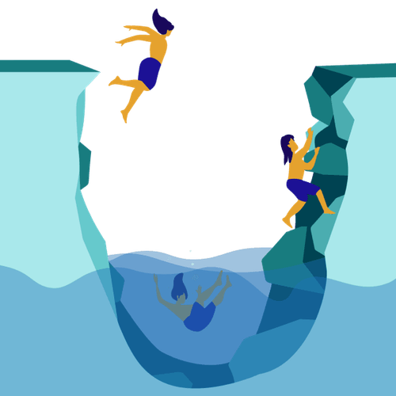

Mit der Academy erhaltet ihr im Business-Plan praxisnahe Lernmodule rund um Facilitation und wirksame Transformation.
Gemeinsam mit 9 Spaces zeigt Plan International Deutschland, wie wertebasiertes Arbeiten Orientierung gibt – nach innen wie nach außen.

Dieses Tool hilft dir dabei, ungewünschte Verhaltensmuster zu verlernen.
In diesem Workshop legt ihr Widerstände mit Veränderungsprozessen offen. So kommt ihr euch als Team näher und findet Wege, euch gegenseitig zu unterstützen.
Dieses Tool hilft dir dabei, ein Leben lang zu lernen – und zwar die Dinge, die dich wirklich interessieren.
Ein Tool, das dir dabei hilft, in alltagstauglichen Mini-Schritten Gewohnheiten zu verändern.